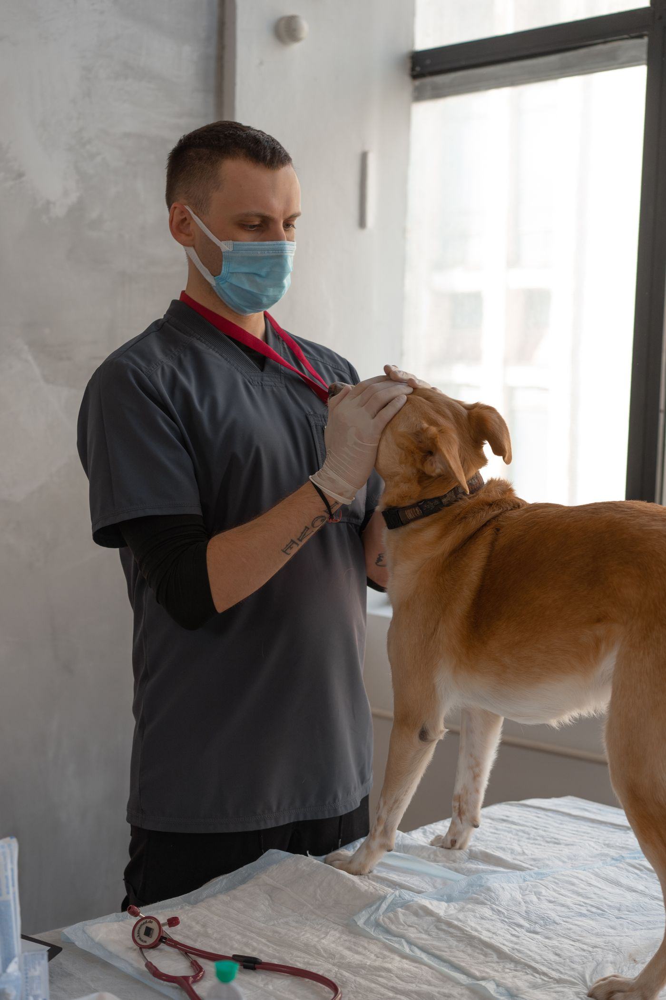
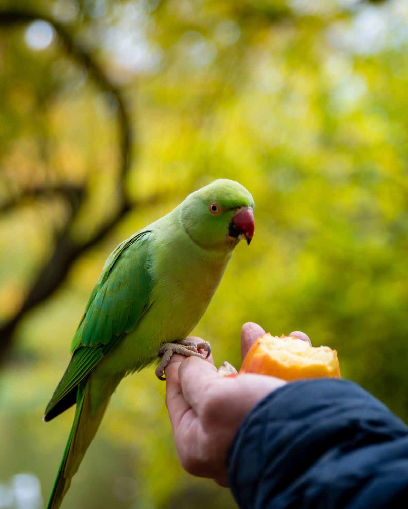
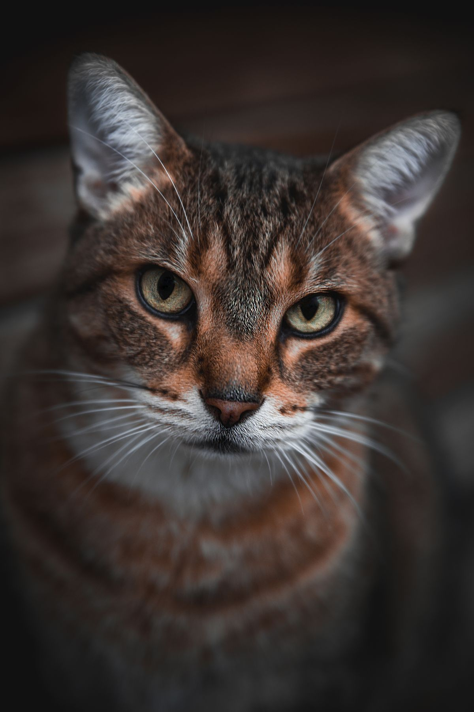

Full-service vet care · West Meade, Nashville
Your pet, treated like our own.
West Meade Veterinary Clinic has cared for Nashville's dogs, cats, and exotic pets since 1992. Wellness exams, vaccinations, dental care, surgery, and more, all in the West Meade neighborhood.
1992
Serving pets since
4.8
from 149 Birdeye reviews
10
Services under one roof
What the clinic does
Complete care, under one roof.
One clinic for the routine and the serious. Here is a first look at what West Meade Veterinary Clinic offers.
- 01
Wellness exams
Thorough physical exams for dogs, cats, and exotic pets.
- 02
Vaccinations
Core and lifestyle vaccines for every stage of life.
- 03
Dental care
Cleanings and dental exams that protect teeth and gums.
- 04
Surgery
In-clinic surgical care, from routine procedures to involved operations.
- 05
Oncology
Diagnosis and treatment planning for pets with cancer.
- 06
Acupuncture
Acupuncture offered as part of a broader care plan.

Avian and exotic care
Birds and exotics are welcome here.
Dr. Michael Lutz is known for his care of avian and exotic pets. If your household includes a bird, a rabbit, or a reptile, call and ask what the clinic can do for them.
Call about your exotic pet
For cats
Cat care, from kittens to seniors.
Wellness exams, vaccinations, dental care, and surgery for cats of every age. Bring your questions. The team takes time to answer them.
Visit the clinic
In West Meade, easy to reach.
990 Davidson Dr, Nashville, TN 37205. Open Monday through Friday, closed Saturday and Sunday. Call (615) 356-1152 to confirm the day's hours and talk through what your pet needs.